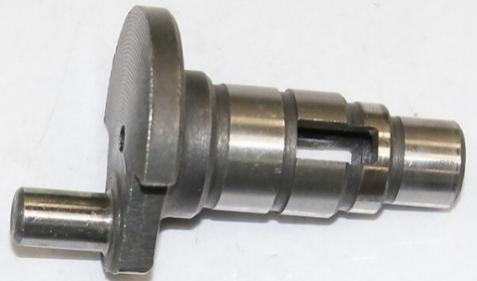
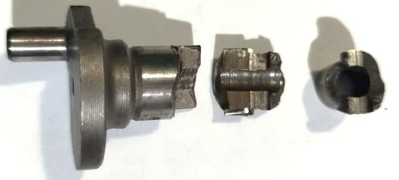
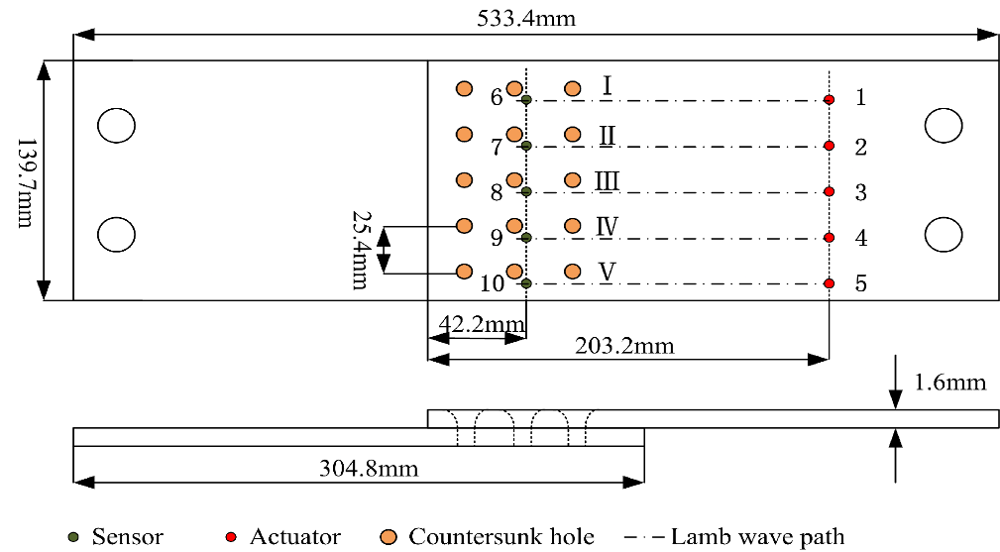
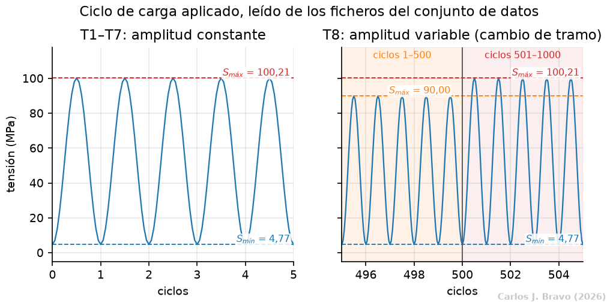
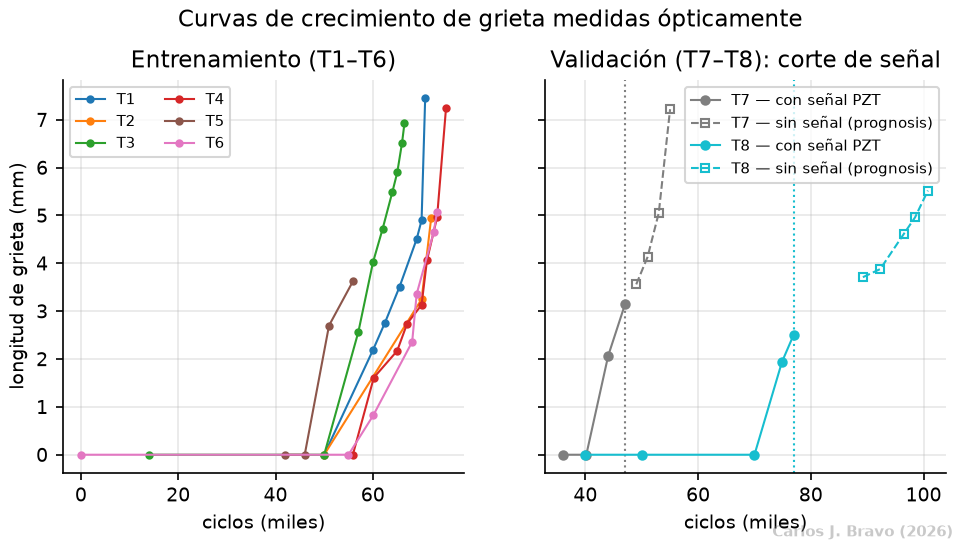

- 1. El problema
- 2. La señal
- 3. La ley física
- 4. El modelo
- 5. Conclusiones
- Bibliografía
Sobre el problema
Antes de hablar de redes neuronales conviene entender qué se mide, quién lo midió y con qué regla se juzga una predicción. Esta parte responde a esas tres preguntas y termina con lo que hicieron los equipos que mejor resolvieron el reto.
El daño que no se ve
Cualquier pieza metálica sometida a cargas que tienen un comportamiento cíclico se va dañando, aunque cada carga por separado sea perfectamente soportable. A ese desgaste se le llama fatiga. En las estructuras aeronáuticas de aluminio el daño suele empezar en un concentrador de tensiones, típicamente el borde del agujero de un remache, y desde ahí nace una grieta diminuta que avanza un poco con cada ciclo de carga.
La aviación convive con ese hecho mediante una filosofía llamada tolerancia al daño: se acepta que una estructura opere con una grieta siempre que esta pueda detectarse, medirse y, sobre todo, predecirse, de manera que se repare antes de que sea peligrosa. La pregunta práctica es doble. Primero, ¿cuánto mide la grieta hoy? Y segundo, ¿cuánto medirá dentro de unos miles de ciclos?


Medir la grieta directamente exige parar y desmontar, así que la alternativa es escucharla. Se pegan a la chapa pequeñas pastillas piezoeléctricas: una emite un pulso ultrasónico, la onda viaja por la placa y otra pastilla la recibe al otro lado. Si en el camino hay una grieta, la onda llega más débil y con la forma alterada. Toda la información sobre el daño está escondida en esos cambios sutiles.
El problema es que esa señal no está disponible siempre. En la práctica habrá tramos sin sensor y, aun así, habrá que decir cuánto crece la grieta. Ahí entra la física: aunque no podamos medir, sí sabemos cómo debe crecer una grieta bajo una carga conocida. Este trabajo intenta juntar las dos piezas en un mismo modelo.
El certamen y sus datos
Los datos proceden del PHM Data Challenge 2019 (en adelante, el certamen), una competición organizada por la PHM Society en la que equipos de todo el mundo recibieron el mismo conjunto de ensayos y debían entregar sus predicciones bajo una regla de puntuación común. Esa es su gran virtud: cualquier método nuevo se puede comparar con los ganadores usando exactamente la misma vara de medir.
Qué se ensayó
Ocho probetas, llamadas T1 a T8, que reproducen en laboratorio la unión de dos paneles de fuselaje: dos chapas de aluminio aeronáutico 2024-T3 de 1.6 mm de espesor, superpuestas y unidas por tres filas de cinco remaches. Una máquina hidráulica las carga cinco veces por segundo hasta romperlas. La grieta aparece siempre en el borde de un remache de la primera fila, que es la que más esfuerzo soporta, y avanza uniendo un agujero con el siguiente.
Para vigilar esa fila se pegan diez pastillas piezoeléctricas: cinco emiten y cinco reciben. Cada pareja define un camino que cruza la zona de remaches. El emisor lanza una onda de Lamb de 200 kHz, un tipo de onda que viaja guiada por la chapa, y el receptor la registra durante 200 µs a 20 millones de muestras por segundo. Como la grieta no nace en el mismo sitio en todas las probetas, el conjunto publica solo el camino en el que se observó.

Los transductores trabajan por parejas fijas, en lo que se llama configuración pitch-catch: el emisor 1 con el receptor 6, el 2 con el 7, y así hasta el 5 con el 10. Cada pareja está en la misma fila de la junta y su camino, horizontal, cruza un único remache de la primera fila, el de la columna más cercana a los emisores, que es donde nace la grieta. Al disparar, la onda se expande en todas direcciones, pero de cada disparo solo se guarda lo que llega al receptor de la pareja. Cada registro tiene dos canales: ch1, la excitación que lanza el emisor, y ch2, lo que recibe el receptor.
De los cinco caminos, el conjunto solo incluye, para cada probeta, aquel en el que se observó la grieta:
| Camino | Pareja (emisor → receptor) | Probetas |
|---|---|---|
| I | 1 → 6 | T1, T6 y T8 |
| II | 2 → 7 | ninguna |
| III | 3 → 8 | T3 |
| IV | 4 → 9 | T2, T4 y T7 |
| V | 5 → 10 | T5 |
Las dos probetas de validación comparten camino con probetas de entrenamiento: T7 con T2 y T4, y T8 con T1 y T6. Aun así, cada probeta lleva sus propios transductores, pegados por separado, y eso basta para que dos probetas con la misma grieta no den la misma señal. Es uno de los problemas que resuelve la Parte 2.
Las cifras del conjunto
El conjunto es pequeño, y esa pequeñez condiciona todo lo que viene después. Cada vez que el ensayo se detiene para medir la grieta con un microscopio, también se registra la onda, dos veces seguidas.
Las probetas T1 a T7 se cargan siempre igual: la tensión oscila entre 4.77 y 100.21 MPa en todos los ciclos. T8 es diferente: su carga alterna bloques de 500 ciclos con un máximo de 90.00 MPa y otros 500 con 100.21 MPa. Ninguna probeta de entrenamiento comparte ese régimen, y por eso T8 es el caso más exigente del certamen.

¿Por qué no añadir más datos?
Con tan pocas probetas, la tentación obvia es sumar ensayos de otras fuentes. El problema es que una onda de Lamb no describe solo la grieta: describe todo el camino que recorre. Su forma depende de la geometría de la pieza y de sus agujeros, de los remaches y los bordes en los que rebota, del material y su espesor, de cómo está pegado cada transductor y de las condiciones del entorno, como la temperatura o la humedad. Kong et al. (2020), segundo puesto del certamen, señalan que la señal llega contaminada por el ruido del entorno, las reflexiones en los bordes, la propagación compleja de la onda y la deformación local de la geometría. En una junta remachada, además, los ecos del remache y de la grieta se superponen (He et al., 2013), y Rai y Mitra (2021) cuentan la temperatura, la humedad, las condiciones de contorno y el pegado de los transductores entre los factores que alteran la respuesta.
Tampoco la grieta crece igual en cualquier circunstancia. Su velocidad cambia con la temperatura (Wang et al., 2025) y con la corrosión (Dourado y Viana, 2019), y las constantes de la ley de crecimiento dependen del material y de la geometría de la unión, como se verá en la Parte 3.
Por eso los datos de otro ensayo no se pueden mezclar sin más. Una junta con otra geometría, otro espesor, otra aleación u otras condiciones de ensayo daría ondas y curvas de crecimiento que no significan lo mismo, y la red aprendería diferencias entre campañas en lugar de diferencias entre grietas. En la revisión realizada no se encontró otro conjunto público con juntas traslapadas remachadas de 2024-T3, la misma instrumentación, condiciones de ensayo controladas y medidas ópticas de la grieta, así que el trabajo se ciñe a las ocho probetas del certamen. Es también lo que hace justa la comparación con los ganadores: todos los métodos se miden sobre exactamente los mismos datos.
Las dos tareas: estimar y predecir
Aquí está el giro del certamen. En las probetas de validación, los organizadores cortan la señal ultrasónica mucho antes de la rotura, pero conservan las medidas ópticas para poder puntuar. Así que el problema se parte en dos tareas de naturaleza distinta:
- Estimación. Hay onda en ese ciclo y hay que convertirla en milímetros de grieta.
- Prognosis. Ya no hay onda. Solo se conoce la última grieta estimada y la carga futura, y hay que decir cuánto medirá varios miles de ciclos después.
En T7 la ventana sin señal dura 8009 ciclos; en T8, 23843. Además, las predicciones se entregaban punto a punto, sin posibilidad de corregir las ya entregadas.

Peculiaridades que hubo que resolver en este dataset limitado
Un conjunto real nunca llega limpio. Estas fueron las rarezas encontradas y lo que se hizo con cada una; el criterio fue siempre que la justificación no dependiera de la puntuación que se obtuviera después.
| Anomalía | Tratamiento |
|---|---|
| El registro de T8 en el ciclo 40000 no se parece a ningún otro de T8 (correlación 0.27 a 0.48, frente a 0.64 a 0.99 entre los demás). | Se excluye; el ciclo 50000 pasa a ser la referencia sin daño de T8. |
| En T1, ciclo 50000, las dos repeticiones no son compatibles entre sí. | Para los registros de referencia se usa siempre la primera repetición. |
| El fichero de T4 anota el ciclo 7054, pero la carpeta es la 67054. | Se corrige al cargar los datos. |
| El ciclo 55391 de T3 tiene señal pero no longitud de grieta. | Se descarta. |
| El ciclo 42000 de T5 no tiene ficheros de señal. | Se retira. |
| T2 y T5 solo tienen dos medidas de grieta no nula. | Sirven para entrenar la red, pero no para calibrar la ley física ni como pliegue de validación. |
Cómo se puntúa
El certamen no premia simplemente acertar en milímetros. Su regla, la penalización oficial, está pensada desde el punto de vista de quien mantiene el avión, y eso la hace bastante particular. Es un número sin unidades, cuanto más bajo mejor, que se calcula por probeta sumando una pequeña multa por cada punto entregado.
Antes de nada, todas las longitudes se dividen por la longitud final medida de la probeta (7.22 mm en T7 y 5.52 mm en T8). Así, un mismo error relativo pesa igual en probetas que rompen con grietas de distinto tamaño. Llamemos x a la grieta real normalizada y x̂ a la entregada:
La multa de cada punto es el producto de tres factores, y la penalización de la probeta es la suma de todas:
Factor temporal: el error pesa más a medida que crece la grieta
Vale 2 cuando la grieta es nula y 12 cuando alcanza su longitud final. El mismo error cuesta seis veces más al final de la vida de la probeta que al principio, que es justo cuando una grieta es peligrosa.
Factor de exactitud: subestimar cuesta más que sobreestimar
Es el corazón de la regla. El error se castiga de forma exponencial y, además, asimétrica: si la grieta entregada es más corta que la real, el divisor es 0.2; si es más larga, 0.5. Con un error de 0.1 (un 10% de la longitud final), quedarse corto cuesta exp(0.5) - 1 = 0.65, mientras que pasarse cuesta exp(0.2) - 1 = 0.22, casi tres veces menos. La lógica es operativa: declarar una grieta más pequeña de lo que es resulta mucho más peligroso que declararla más grande.
Factor de monotonía: una grieta, una vez propagada, nunca encoge
Una grieta por fatiga no puede cerrarse. Si la secuencia entregada retrocede, la multa de ese punto se multiplica en proporción al tamaño del retroceso. Mientras la secuencia crece, este factor vale 1 y no hace nada.
Junto a la penalización se informa también del error medio en milímetros (RMSE), que es la métrica habitual en la literatura y permite comparar con trabajos que no usan la regla del certamen.
Los tres primeros puestos
Los tres equipos que encabezaron el certamen siguieron, en el fondo, la misma receta en dos etapas: primero extraen de la onda unas cuantas características elegidas a mano y las convierten en longitud de grieta; después anclan una curva o una ley física creciente a esas estimaciones y la prolongan hacia el futuro. Ninguno impuso la monotonía como restricción del aprendizaje; la obtienen de regalo porque la curva con la que extrapolan solo puede subir. Cada tarjeta abre, en otra pestaña, el cuaderno con la réplica del método.
Youn et al. (2020)
Una regresión de vectores de soporte (SVR) con núcleo gaussiano sobre características filtradas de la señal, referidas al registro sin daño. Para el futuro usan trans-fitting: trasladan y reajustan una curva de crecimiento candidata.
Kong et al. (2020)
Un bosque aleatorio (Random Forest) estima la grieta, y la extrapolación se apoya en la ecuación de Walker, una variante de la ley de Paris sensible a la tensión media, con simulación de Monte Carlo para T8.
Rao et al. (2020)
Solo cuatro características (primer pico, RMS, logaritmo de la curtosis y correlación) combinadas en una regresión lineal de conjunto, y una ley de Paris cuyos parámetros se ajustan con un algoritmo genético.
Por qué no se pudieron replicar
Para tener una referencia justa, los tres métodos se reconstruyeron desde cero a partir de sus artículos y se ejecutaron sobre los mismos datos y con el mismo protocolo. El resultado fue llamativo: las réplicas quedan entre quince y treinta veces por encima de los valores publicados.
| Método | Publicado T7 | Publicado T8 | Publicado total | Réplica T7 | Réplica T8 | Réplica total |
|---|---|---|---|---|---|---|
| Youn et al. (2020) | 3.42 | 3.94 | 7.36 | 22.71 | 91.60 | 114.31 |
| Kong et al. (2020) | 3.54 | 4.09 | 7.63 | 83.25 | 148.34 | 231.60 |
| Rao et al. (2020) | 9.23 | 6.86 | 16.09 | 215.12 | 25.79 | 240.91 |
Esa distancia no significa que los valores publicados sean falsos. Significa que los artículos no contienen información suficiente para reproducirlos: ninguno publica código, ninguno publica los parámetros de la ley de crecimiento que usó, y quedan sin especificar el tratamiento exacto de la señal, las ventanas temporales y cómo se fijan los puntos desde los que se extrapola. Cada una de esas decisiones se reconstruyó a partir del texto, y otra reconstrucción daría otras cifras.
Los propios autores reconocen esa fragilidad: los tres señalan en sus conclusiones que el número de probetas de entrenamiento es escaso. Por eso, a lo largo del sitio, las cifras publicadas se mantienen como referencia superior y las réplicas como el único término de comparación reproducible.